It turns out that finite state machines are useful for things other than expressing computation. Finite state machines can also be used to compactly represent ordered sets or maps of strings that can be searched very quickly.
In this article, I will teach you about finite state machines as a data
structure for representing ordered sets and maps. This includes introducing
an implementation written in Rust called the
fst crate.
It comes with
complete API documentation.
I will also show you how to build them using a simple command line tool.
Finally, I will discuss a few experiments culminating in indexing over
1,600,000,000 URLs (134 GB) from the
July 2015 Common Crawl Archive.
The technique presented in this article is also how Lucene represents a part of its inverted index.
Along the way, we will talk about memory maps, automaton intersection with regular expressions, fuzzy searching with Levenshtein distance and streaming set operations.
Target audience: Some familiarity with programming and fundamental data structures. No experience with automata theory or Rust is required.
Teaser
As a teaser to show where we're headed, let's take a quick look at an example.
We won't look at 1,600,000,000 strings quite yet. Instead, consider ~16,000,000
Wikipedia article titles (384 MB). Here's how to index them:
$ time fst set --sorted wiki-titles wiki-titles.fst
real 0m18.310The resulting index, wiki-titles.fst, is 157 MB. By comparison, gzip
takes 12 seconds and compresses to 91 MB. (For some data sets, our indexing
scheme can beat gzip in both speed and compression ratio.)
However, here's something gzip cannot do: quickly find all article titles
starting with Homer the:
$ time fst grep wiki-titles.fst 'Homer the.*'
Homer the Clown
Homer the Father
Homer the Great
Homer the Happy Ghost
Homer the Heretic
Homer the Moe
Homer the Smithers
...
real 0m0.023sBy comparison, grep takes 0.3 seconds on the original uncompressed data.
And finally, for something that even grep cannot do: quickly find all article
titles within a certain edit distance of Homer Simpson:
$ time fst fuzzy wiki-titles.fst --distance 2 'Homer Simpson'
Home Simpson
Homer J Simpson
Homer Simpson
Homer Simpsons
Homer simpson
Homer simpsons
Hope Simpson
Roger Simpson
real 0m0.094sThis article is quite long, so if you only came for the fan fare, then you may skip straight to the section where we index 1,600,000,000 keys.
Table of Contents
This article is pretty long, so I've put together a table of contents in case you want to skip around.
The first section discusses finite state machines and their use as data structures in the abstract. This section is meant to give you a mental model with which to reason about the data structure. There is no code in this section.
The second section takes the abstraction developed in the first section and
demonstrates it with an implementation. This section is mostly intended to
be an overview of how to use my fst
library. This section contains code. We will discuss some implementation
details, but will avoid the weeds. It is okay to skip this section if you don't
care about the code and instead only want to see experiments on real data.
The third and final section demonstrates use of a simple command line tool to build indexes. We will look at some real data sets and attempt to reason about the performance of finite state machines as a data structure.
- Finite state machines as data structures
- The FST library
- The FST command line tool
- Lessons and trade offs
- Conclusion
Finite state machines as data structures
A finite state machine (FSM) is a collection of states and a collection of transitions that move from one state to the next. One state is marked as the start state and zero or more states are marked as final states. An FSM is always in exactly one state at a time.
FSM's are rather general and can be used to model a number of processes. For example, consider an approximation of the daily life of my cat Cauchy:
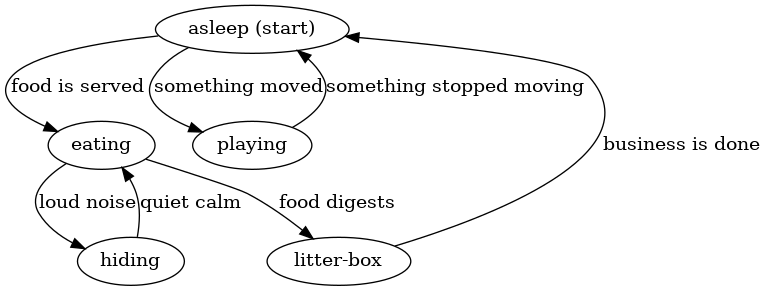
Some states are “asleep” or “eating” and some transitions are “food is served” or “something moved.” There aren't any final states here because that would be unnecessarily morbid!
Notice that the FSM approximates our notion of reality. Cauchy cannot be both playing and asleep at the same time, so it satisfies our condition that the machine is only ever in one state at a time. Also, notice that transitioning from one state to the next only requires a single input from the environment. Namely, being “asleep” carries no memory of whether it was caused by getting tired from playing or from being satisfied after a meal. Regardless of how Cauchy fell asleep, he will always wake up if he hears something moving or if the dinner bell rings.
Cauchy's finite state machine can perform computation given a sequence of inputs. For example, consider the following inputs:
- food is served
- loud noise
- quiet calm
- food digests
If we apply these inputs to the machine above, then Cauchy will move through the following states in order: “asleep,” “eating,” “hiding,” “eating,” “litter box.” Therefore, if we observed that food was served, followed by a loud noise, followed by quiet calm and finally by Cauchy's digestion, then we could conclude that Cauchy was currently in the litter box.
This particularly silly example demonstrates how general finite state machines truly are. For our purposes, we will need to place a few restrictions on the type of finite state machine we use to implement our ordered set and map data structures.
Ordered sets
An ordered set is like a normal set, except the keys in the set are ordered. That is, an ordered set provides ordered iteration over its keys. Typically, an ordered set is implemented with a binary search tree or a btree, and an unordered set is implemented with a hash table. In our case, we will look at an implementation that uses a deterministic acyclic finite state acceptor (abbreviated FSA).
A deterministic acyclic finite state acceptor is a finite state machine that is:
- Deterministic. This means that at any given state, there is at most one transition that can be traversed for any input.
- Acyclic. This means that it is impossible to visit a state that has already been visited.
- An acceptor. This means that the finite state machine “accepts” a particular sequence of inputs if and only if it is in a “final” state at the end of the sequence of inputs. (This criterion, unlike the former two, will change when we look at ordered maps in the next section.)
How can we use these properties to represent a set? The trick is to store the keys of the set in the transitions of the machine. This way, given a sequence of inputs (i.e., characters), we can tell whether the key is in the set based on whether evaluating the FSA ends in a final state.
Consider a set with one key “jul.” The FSA looks like this:
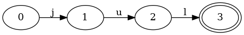
Consider what happens if we ask the FSA if it contains the key “jul.” We need to process the characters in order:
- Given
j, the FSA moves from the start state0to1. - Given
u, the FSA moves from1to2. - Given
l, the FSA moves from2to3.
Since all members of the key have been fed to the FSA, we can now ask: is the
FSA in a final state? It is (notice the double circle around state 3), so we
can say that jul is in the set.
Consider what happens when we test a key that is not in the set. For example,
jun:
- Given
j, the FSA moves from the start state0to1. - Given
u, the FSA moves from1to2. - Given
n, the FSA cannot move. Processing stops.
The FSA cannot move because the only transition out of state 2 is l,
but the current input is n. Since l != n, the FSA cannot follow that
transition. As soon as the FSA cannot move given an input, it can conclude that
the key is not in the set. There's no need to process the input further.
Consider another key, ju:
- Given
j, the FSA moves from the start state0to1. - Given
u, the FSA moves from1to2.
In this case, the entire input is exhausted and the FSA is in state 2. To
determine whether ju is in the set, it must ask whether 2 is a final state
or not. Since it is not, it can report that the ju key is not in the set.
It is worth pointing out here that the number of steps required to confirm whether a key is in the set or not is bounded by the number of characters in the key! That is, the time it takes to lookup a key is not related at all to the size of the set.
Let's add another key to the set to see what it looks like. The following FSA represents an ordered set with keys “jul” and “mar”:
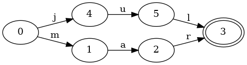
The FSA has grown a little more complex. The start state 0 now has two
transitions: j and m. Therefore, given the key mar, it will first
follow the m transition.
There's one other important thing to notice here: the state 3 is shared
between the jul and mar keys. Namely, the state 3 has two transitions
entering it: l and r. This sharing of states between keys is really
important, because it enables us to store more information in a smaller space.
Let's see what happens when we add jun to our set, which shares a common
prefix with jul:
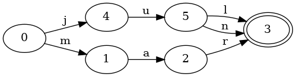
Do you see the difference? It's a small change. This FSA looks very much like
the previous one. There's only one difference: a new transition, n, from
states 5 to 3 has been added. Notably, the FSA has no new states! Since
both jun and jul share the prefix ju, those states can be reused for both
keys.
Let's switch things up a little bit and look at a set with the following keys:
october, november and december:
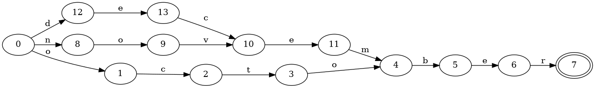
Since all three keys share the suffix ber in common, it is only encoded into
the FSA exactly once. Two of the keys share an even bigger suffix: ember,
which is also encoded into the FSA exactly once.
Before moving on to ordered maps, we should take a moment and convince ourselves that this is indeed an ordered set. Namely, given an FSA, how can we iterate over the keys in the set?
To demonstrate this, let's use a set we built earlier with the keys jul,
jun and mar:
We can enumerate all keys in the set by walking the entire FSA by following transitions in lexicographic order. For example:
- Initialize at state
0.keyis empty. - Move to state
4. Addjtokey. - Move to state
5. Addutokey. - Move to state
3. Addltokey. Emitjul. - Move back to state
5. Droplfromkey. - Move to state
3. Addntokey. Emitjun. - Move back to state
5. Dropnfromkey. - Move back to state
4. Dropufromkey. - Move back to state
0. Dropjfromkey. - Move to state
1. Addmtokey. - Move to state
2. Addatokey. - Move to state
3. Addrtokey. Emitmar.
This algorithm is straight-forward to implement with a stack of the states to
visit and a stack of transitions that have been followed. It has time
complexity O(n) in the number of keys in the set with space complexity O(k)
where k is the size of the largest key in the set.
Ordered maps
As with ordered sets, an ordered map is like a map, but with an ordering defined on the keys of the map. Just like sets, ordered maps are typically implemented with a binary search tree or a btree, and unordered maps are typically implemented with a hash table. In our case, we will look at an implementation that uses a deterministic acyclic finite state transducer (abbreviated FST).
A deterministic acyclic finite state transducer is a finite state machine that is (the first two criteria are the same as the previous section):
- Deterministic. This means that at any given state, there is at most one transition that can be traversed for any input.
- Acyclic. This means that it is impossible to visit a state that has already been visited.
- A transducer. This means that the finite state machine emits a value associated with the specific sequence of inputs given to the machine. A value is emitted if and only if the sequence of inputs causes the machine to end in a final state.
In other words, an FST is just like an FSA, but instead of answering “yes”/“no” given a key, it will answer either “no” or “yes, and here's the value associated with that key.”
In the previous section, representing a set only required one to store the keys in the transitions of the machine. The machine “accepts” an input sequence if and only if it represents a key in the set. In this case, a map needs to do more than just “accept” an input sequence; it also needs to return a value associated with that key.
One way to associate a value with a key is to attach some data to each transition. Just as an input sequence is consumed to move the machine from state to state, an output sequence can be produced as the machine moves from state to state. This additional “power” makes the machine a transducer.
Let's take a look at an example of a map with one element, jul, which is
associated with the value 7:
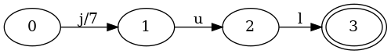
This machine is the same as the corresponding set, except that the first
transition j from state 0 to 1 has the output 7 associated with it.
The other transitions, u and l, also have an output 0 associated with
them that isn't shown in the image.
As with sets, we can ask the map if it contains the key “jul.” But we also need to return the output. Here's how the machine processes a key lookup for “jul”:
- Initialize
valueto0. - Given
j, the FST moves from the start state0to1. Add7tovalue. - Given
u, the FST moves from1to2. Add0tovalue. - Given
l, the FST moves from2to3. Add0tovalue.
Since all inputs have been fed to the FST, we can now ask: is the FST in a
final state? It is, so we know jul is in the map. Additionally, we can report
value as the value associated with the key jul, which is 7.
Not so amazing, right? The example is a bit too simplistic. A map with a single
key isn't very instructive. Let's see what happens when we add mar to the
map, associated with the value 3:
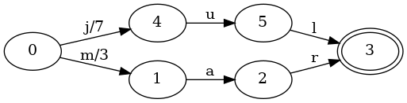
The start state has grown a new transition, m, with an output of 3. If we
lookup the key jul, then the process is the same as in the previous map:
we'll get back a value of 7. If we lookup the key mar, then the process
looks like this:
- Initialize
valueto0. - Given
m, the FST moves from the start state0to1. Add3tovalue. - Given
a, the FST moves from1to2. Add0tovalue. - Given
r, the FST moves from2to3. Add0tovalue.
The only change here—other than following different input transitions—is
that 3 was added to value in the first move. Since all subsequent moves add
0 to value, the machine reports 3 as the value associated with mar.
Let's keep going. What happens when we have keys that share a common prefix?
Consider the same map as above, but with the jun key added associated with
the value 6:
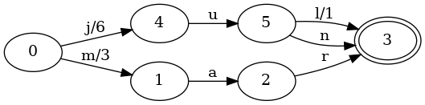
As with sets, an additional n transition was added connecting states 5 and
3. But there were two additional changes!
- The
0->4transition for inputjhad its output changed from7to6. - The
5->3transition for inputlhad its output changed from0to1.
Those changes in outputs are really important, because it now changes some of
the details for looking up the value associated with the key jul:
- Initialize
valueto0. - Given
j, the FST moves from the start state0to4. Add6tovalue. - Given
u, the FST moves from4to5. Add0tovalue. - Given
l, the FST moves from5to3. Add1tovalue.
The final value is still 7, but we arrived at the value differently. Instead
of adding 7 in the initial j transition, we only added 6, but we made up
the extra 1 by adding it in the final l transition.
We should also convince ourselves that looking up the jun key is correct too:
- Initialize
valueto0. - Given
j, the FST moves from the start state0to4. Add6tovalue. - Given
u, the FST moves from4to5. Add0tovalue. - Given
n, the FST moves from5to3. Add0tovalue.
The first transition adds 6 to value, but we never add anything more than
0 to value on any subsequent transitions. This is because the jun key
does not go through the same final l transition that jul does. In this way,
both keys have distinct values, but we've done it in a way that shares much of
the data structure between keys with common prefixes.
Indeed, the key property that enables this sharing is that each key in the map corresponds to a unique path through the machine. Therefore, there will always be some combination of transitions followed for each key that is unique to that particular key. All we have to do is figure out how to place the outputs along the transitions. (We will see how to do this in the next section.)
This sharing of outputs works for keys with both common prefixes and suffixes
too. Consider the keys tuesday and thursday, associated with the values 3
and 5, respectively (for day of the week).
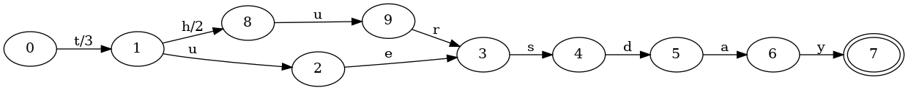
Both keys have a common prefix, t, and a common suffix, sday. Notice that
the values associated with the keys also have a common prefix with respect to
addition on the values. Namely, 3 can be written as 3 + 0 and 5 can be
written as 3 + 2. This idea is captured in the machine; the common prefix t
has an output of 3, while the h transition (which is not present in
tuesday) has the output 2 associated with it. Namely, when looking up the
key tuesday, the first output on t will be emitted, but the h transition
won't be followed, so the 2 output associated with it won't be emitted. The
rest of the transitions have an output of 0, which does not change the final
value emitted.
The way I've described outputs might seem a bit restrictive; what if they aren't integers? Indeed, the types of outputs that can be used in an FST are limited to things with the following operations defined:
- Addition.
- Subtraction.
- Prefix (i.e., find the prefix of two outputs).
Outputs must also have an additive identity, I, such that the following laws
hold:
x + I = xx - I = xprefix(x, y) = Iwhenxandydo not share a common prefix.
Integers satisfy this algebra trivially (where prefix is defined as min)
with the added benefit that they are very small. Other types can be made to
satisfy this algebra, but for now, we will only work with integers.
We only needed to use addition in the above examples, but we will need the other two operations for building a FST. That's what we'll cover next.
Construction
In the previous two sections, I have been careful to avoid talking about the construction of finite state machines that are used to represent ordered sets or maps. Namely, construction is a bit more complex than simple traversal.
To keep things simple, we place a restriction on the elements in our set or map: they must be added in lexicographic order. This is an onerous restriction, but we will see later how to mitigate it.
To motivate construction of finite state machines, let's talk about tries.
Trie construction
A trie can be thought of as a deterministic acyclic finite state acceptor. Therefore, everything you learned in the previous section on ordered sets applies equally well to them. The only difference between a trie and the FSAs shown in this article is that a trie permits the sharing of prefixes between keys while an FSA permits the sharing of both prefixes and suffixes.
Consider a set with the keys mon, tues and thurs. Here is the
corresponding FSA that benefits from sharing both prefixes and suffixes:
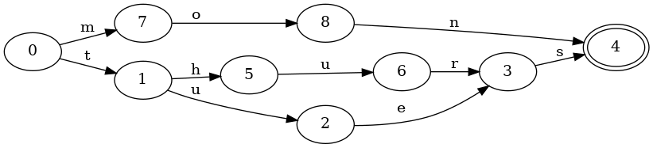
And here is the corresponding trie, which only shares prefixes:
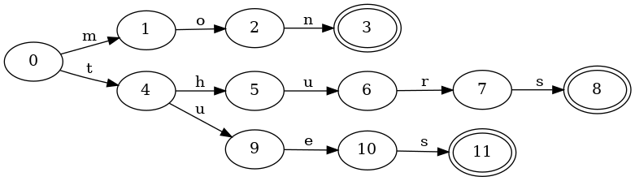
Notice that there are now three distinct final states, and the keys tues and
thurs require duplicating the final transition for s to the final state.
Constructing a trie is reasonably straight-forward. Given a new key to insert, all one needs to do is perform a normal lookup. If the input is exhausted, then the current state should be marked as final. If the machine stops before the input is exhausted because there are no valid transitions to follow, then simply create a new transition and node for each remaining input. The last node created should be marked final.
FSA construction
Recall that the only difference between a trie and an FSA is that an FSA permits the sharing of suffixes between keys. Since a trie is itself an FSA, we could construct a trie and then apply a general minimization algorithm, which would achieve our goal of sharing suffixes.
However, general minimization algorithms can be expensive both in time and space. For example, a trie can often be much larger than an FSA that shares structure between suffixes of keys. Instead, if we can assume that keys are added in lexicographic order, we can do better. The essential trick is realizing that when inserting a new key, any parts of the FSA that don't share a prefix with the new key can be frozen. Namely, no new key added to the FSA can possibly make that part of the FSA smaller.
Some pictures might help explain this better. Consider again the keys mon,
tues and thurs. Since we must add them in lexicographic order, we'll add
mon first, then thurs and then tues. Here's what the FSA looks like after
the first key has been added:
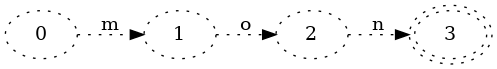
This isn't so interesting. Here's what happens when we insert thurs:
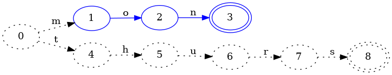
The insertion of thurs caused the first key, mon, to be frozen (indicated
by blue coloring in the image). When a particular part of the FSA has been
frozen, then we know that it will never need to be modified in the future.
Namely, since all future keys added will be >= thurs, we know that no future
keys will start with mon. This is important because it lets us reuse that
part of the automaton without worrying about whether it might change in the
future. Stated differently, states that are colored blue are candidates for
reuse by other keys.
The dotted lines represent that thurs hasn't actually been added to the FSA
yet. Indeed, adding it requires checking whether there exists any reusable
states. Unfortunately, we can't do that yet. For example, it is true that
states 3 and 8 are equivalent: both are final and neither has any
transitions. However, it is not true that state 8 will always be equal to
state 3. Namely, the next key we add could, for example, be thursday. That
would change state 8 to having a d transition, which would make it not
equal to state 3. Therefore, we can't quite conclude what the key thurs
looks like in the automaton yet.
Let's move on to inserting the next key, tues:
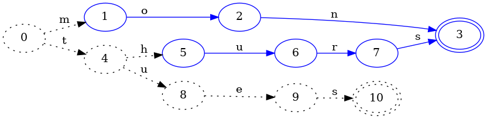
In the process of adding tues, we deduced that the hurs part of the thurs
key could be frozen. Why? Because no future key inserted could possibly
minimize the path taken by hurs since keys are inserted in lexicographic
order. For example, we now know that the key thursday cannot ever be part of
the set, so we can conclude that the final state of thurs is equivalent to
the final state of mon: they are both final and both have no transitions, and
this will forever be true.
Notice that state 4 remained dotted: it is possible that state 4 could
change upon subsequent key insertions, so we cannot consider it equal to any
other state just yet.
Let's add one more key to drive the point home. Consider the insertion of
zon:
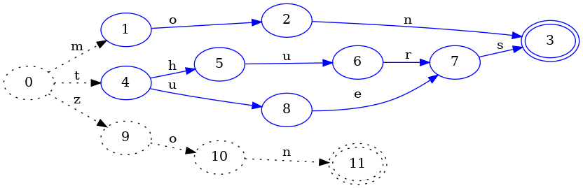
We see here that state 4 has finally been frozen because no future
insertion after zon can possibly change the state 4. Additionally, we could
also conclude that thurs and tues share a common suffix, and that, indeed,
states 7 and 9 (from the previous image) are equivalent because neither of
them are final and both have a single transition with input s that points to
the same state. It is critical that both of their s transitions point to the
same state, otherwise we cannot reuse the same structure.
Finally, we must signal that we are done inserting keys. We can now freeze the
last portion of the FSA, zon, and look for redundant structure:
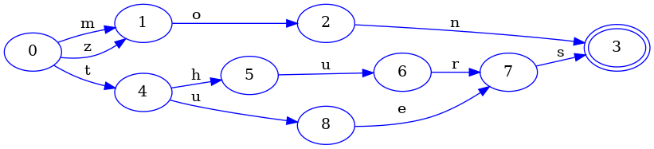
And of course, since mon and zon share a common suffix, there is indeed
redundant structure. Namely, the state 9 in the previous image is equivalent
in every way to state 1. This is only true because states 10 and 11 are
also equivalent to states 2 and 3. If that weren't true, then we couldn't
consider states 9 and 1 equal. For example, if we had inserted the key
mom into our set and still assumed that states 9 and 1 were equal, then
the resulting FSA would look something like this:
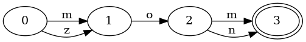
And this would be wrong! Why? Because this FSA will claim that the key zom is
in the set—but we never actually added it.
Finally, it is worth noting that the construction algorithm outlined here can
run in O(n) time where n is the number of keys. It is easy to see that
inserting a key initially into the FST without checking for redundant structure
does not take any longer than looping over each character in the key, assuming
that looking up a transition in each state takes constant time. The trickier
bit is: how do we find redundant structure in constant time? The short answer
is a hash table, but I will explain some of the challenges with that in the
section on construction in practice.
FST construction
Constructing deterministic acyclic finite state transducers works in much the same way as constructing deterministic acyclic finite state acceptors. The key difference is the placement and sharing of outputs on transitions.
To keep the mental burden low, we will reuse the example in the previous
section with keys mon, tues and thurs. Since FSTs represent maps, we will
associate the numeric day of the week with each key: 2, 3 and 5,
respectively.
As before, we'll start with inserting the first key, mon:
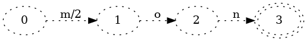
(Recall that the dotted lines correspond to pieces of the FST that may change on subsequent key insertion.)
This isn't so interesting, but it is at least worth noting that the output 2
is placed on the first transition. Technically, the following transducer would
be equally correct:
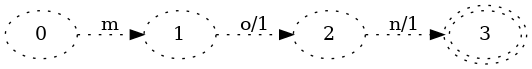
However, placing the outputs as close to the initial state as possible makes it much easier to write an algorithm that shares output transitions between keys.
Let's move on to inserting the key thurs mapped to the value 5:
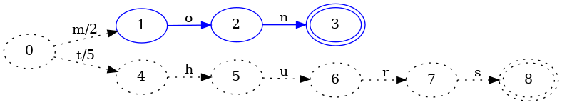
As with FSA construction, insertion of the key thurs allows us to conclude
that the mon portion of the FST will never change. (As represented in the
image by the color blue.)
Since the mon and thurs keys don't share a common prefix and they are the
only two keys in the map, their entire output values can each be placed in the
first transition out of the start state.
However, when we add the next key, tues, things get a little more
interesting:
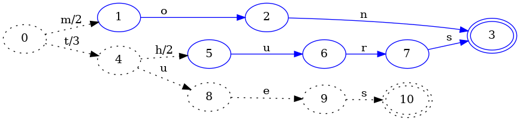
As with FSA construction, this identifies another portion of the FST that can
never change and freezes it. The difference here is that the output on the
transition from state 0 to 4 has changed from 5 to 3. This is because
the tues key's value is 3, so if the initial t transition added 5 to
the value, then the value would be too big. We want to share as much structure
as is possible, so when we identify a common prefix, we look for the common
prefix in the output values as well. In this case, the prefix of 5 and 3 is
3. Since 3 is the value associated with the key tues, its remaining
transitions can all have an output of 0.
However, if we changed the output of the 0->4 transition from 5 to 3, the
value associated with the key thurs would now be wrong. We then have to
“push” the left over value from taking the prefix of 5 and 3 down. In this
case 5 - 3 = 2, so we add 2 to each transition on 4 (except for the new
u transition we added).
In this way, we preserve the outputs of previous keys, add a new output for a new key and share as much structure as possible in the FST.
As with before, let's try adding one more key. This time, let's pick a key that
has a more interesting impact on outputs. Let's add tye to the map and
associate it with the value 99 to see what happens.
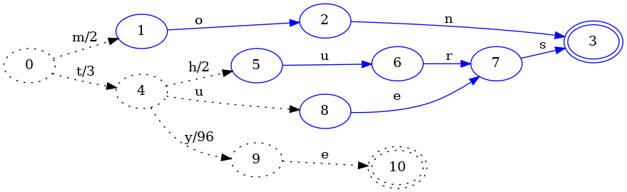
Insertion of the tye key allowed us to freeze the es part of the tues
key. In particular, as with FSA construction, we identified equivalent states
so that thurs and tues could share states in the FST.
What is different here for FST construction is that the output associated with
the 4->9 transition (which was just added for the tye key) has an output of
96. It chose 96 because the transition prior to it, 0->4, has an output
of 3. Since the common prefix of 99 and 3 is 3, the output of 0->4 is
left unchanged, and the output for 4->9 is set to 99 - 3 = 96.
For completeness, here is the final FST after indicating that no more keys will be added:
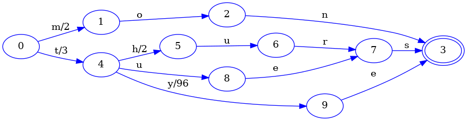
The only real change here from the previous step is that the final transition
of the tye key is connected to the final state shared by all other keys.
Construction in practice
Actually writing the code to implement the pictorially described algorithms
above is a bit beyond the scope of this article. (A fast implementation of it
is of course freely available in my fst
library.) However, there are some important challenges worth discussing.
One of the critical use cases of an FST data structure is its ability to store and search a very large number of keys. This goal is somewhat at odds with the algorithm described above, since it requires one to keep all frozen states in memory. Namely, in order to detect whether there are parts of the FST that can be reused for a given key, you must be able to actually search for equivalent states.
The literature which describes this algorithm (linked in the next section) states that one can use a hash table for this, which provides constant time access to any particular state (assuming a good hash function). The problem with this approach is that a hash table usually incurs some kind of overhead, in addition to actually storing all of the states in memory.
It is possible to mitigate the onerous memory required by sacrificing
guaranteed minimality of the resulting FST. Namely, one can maintain a hash
table that is bounded in size. This means that commonly reused states are
kept in the hash table while less commonly reused states are evicted. In
practice, a hash table with about 10,000 slots achieves a decent compromise
and closely approximates minimality in my own unscientific experiments. (The
actual implementation does a little better and stores a small LRU cache in each
slot, so that if two common but distinct nodes map to the same bucket, they can
still be reused.)
An interesting consequence of using a bounded hash table which only stores some of the states is that construction of an FST can be streamed to a file on disk. Namely, when states are frozen as described in the previous two sections, there's no reason to keep all of them in memory. Instead, we can immediately write them to disk (or a socket, or whatever).
The end result is that we can construct an approximately minimal FST from pre-sorted keys in linear time and in constant memory.
References
The algorithms presented above are not my own. (I did, to the best of my knowledge, come up with the LRU cache idea. But that's it!)
I got the algorithm for FSA construction from Incremental Construction of Minimal Acyclic Finite State Automata. In particular, section 3 does a reasonably good job of explaining the particulars, but the paper overall is a good read.
I got the algorithm for FST construction from Direct Construction of Minimal Acyclic Subsequential Transducers. The whole paper is a really good read, but I had to read it about 3-5 times over the course of a week to really let it sink in. There is pseudo-code for the algorithm near the end of the paper, which is very readable once your brain gets acclimated to what all of the variables mean.
Those two papers pretty much cover everything in the article so far. However, there is more worth reading to actually write an efficient implementation. In particular, this article will not cover in detail how nodes and transitions are represented in an FST. The short answer is that the representation of an FST is a sequence of bytes in memory and the vast majority of states take up exactly one byte of space. Indeed, representing finite state machines is an active area of research. Here are two papers that helped me the most:
- Experiments with Automata Compression (Unfortunately, if you click on this link, researchgate.net will seem to redirect you to a very unfriendly UI. If you just want the PDF already, copy the link and paste it directly in your address bar. The actual article is on page 116 of the PDF or page 105 of the conference collection.)
- Smaller Representation of Finite State Automata
For an excellent but very long and in depth overview of the field, Jan Daciuk's dissertation (gzipped PostScript warning) is excellent.
For a short and sweet experimentally motivated overview of construction algorithms, Comparison of Construction Algorithms for Minimal, Acyclic, Deterministic, Finite-State Automata from Sets of Strings is very good.
The FST library
The fst crate (Rust's word for “compilation unit”) I built is written in
Rust, fast and memory conscious. It provides two convenient abstractions
around ordered sets and ordered maps, while also providing raw access to the
underlying finite state transducer. Loading sets and maps using memory maps is
a first class feature, which makes it possible to query sets or maps without
loading the entire data structure into memory first.
The capabilities of ordered sets and maps mirror that of
BTreeSet
and
BTreeMap
found in Rust's standard library.
The key difference is that sets and maps in fst are immutable, keys are fixed
to byte sequences, and values, in the case of maps, are always unsigned 64 bit
integers.
In this section, we will tour the following topics:
- Building ordered sets and maps represented by finite state machines.
- Querying ordered sets and maps.
- Executing general automatons against a set or a map. We'll cover Levenshtein automatons (for fuzzy searching) and regular expressions as two interesting examples.
- Performing efficient streaming set operations (e.g., intersection and union) on many sets or maps at once.
- A brief look at querying the transducer directly as a finite state machine.
As such, this section will be very heavy on Rust code. I'll do my best to attach high level descriptions of what's going on in the code so that you don't need to know Rust in order to know what's happening. With that said, to get the most out of this section, I'd recommend reading the excellent Rust Programming Language book.
Additionally, you may also find it useful to keep the
fst API documentation
handy, which may act as a nice supplement to the material in this section.
Building ordered sets and maps
Most data structures in Rust are mutable, which means queries, insertions and deletions are all bundled up neatly in a single API. Data structures built on the FSTs described in this blog post are unfortunately a different animal, because once they are built, they can no longer be modified. Therefore, there is a division in the API the distinguishes between building an FST and querying an FST.
This division is reflected in the types exposed by the fst library. Among
them are Set and SetBuilder, where the former is for querying and the
latter is for insertion. Maps have a similar dichotomy with Map and
MapBuilder.
Let's get on to a simple example that builds a set and writes it to a file. A really important property of this code is that the set is written to the file as it is being constructed. At no time is the entire set actually stored in memory!
(If you're not familiar with Rust, I've attempted to be a bit verbose in the comments.)
// Imports the `File` type into this scope and the entire `std::io` module.
use std::fs::File;
use std::io;
// Imports the `SetBuilder` type from the `fst` module.
use fst::SetBuilder;
// Create a file handle that will write to "set.fst" in the current directory.
let file_handle = File::create("set.fst")?;
// Make sure writes to the file are buffered.
let buffered_writer = io::BufWriter::new(file_handle);
// Create a set builder that streams the data structure to set.fst.
// We could use a socket here, or an in memory buffer, or anything that
// is "writable" in Rust.
let mut set_builder = SetBuilder::new(buffered_writer)?;
// Insert a few keys from the greatest band of all time.
// An insert can fail in one of two ways: either a key was inserted out of
// order or there was a problem writing to the underlying file.
set_builder.insert("bruce")?;
set_builder.insert("clarence")?;
set_builder.insert("stevie")?;
// Finish building the set and make sure the entire data structure is flushed
// to disk. After this is called, no more inserts are allowed. (And indeed,
// are prevented by Rust's type/ownership system!)
set_builder.finish()?;
(If you aren't familiar with Rust, you're probably wondering: what the heck is
that ? thing? Well, in short, it's an operator that uses early returns and
polymorphism to handle errors for us. The best way to think of it is: every
time you see ?, it means the underlying operation may fail, and if it
does, return the error value and stop executing the current function. See my
other blog post on error handling in Rust for more
details.
At a high level, this code is:
- Creating a file and wrapping it in a buffer for fast writing.
- Create a
SetBuilderthat writes to the file we just created. - Inserts keys into the set using the
SetBuilder::insertmethod. - Closes the set and flushes the data structure to disk.
Sometimes though, we don't need or want to stream the set to a file on disk. Sometimes we just want to build it in memory and use it. That's possible too!
use fst::{Set, SetBuilder};
// Create a set builder that streams the data structure to memory.
let mut set_builder = SetBuilder::memory();
// Inserts are the same as before.
// They can still fail if they are inserted out of order, but writes to the
// heap are (mostly) guaranteed to succeed. Since we know we're inserting these
// keys in the right order, we use "unwrap," which will panic or abort the
// current thread of execution if it fails.
set_builder.insert("bruce").unwrap();
set_builder.insert("clarence").unwrap();
set_builder.insert("stevie").unwrap();
// Finish building the set and get back a region of memory that can be
// read as an FST.
let fst_bytes = set_builder.into_inner()?;
// And create a new Set with those bytes.
// We'll cover this more in the next section on querying.
let set = Set::from_bytes(fst_bytes).unwrap();
This code is mostly the same as before with two key differences:
- We no longer need to create a file. We just instruct the
SetBuilderto allocate a region of memory and use that instead. - Instead of calling
finishat the end, we callinto_innerinstead. This does the same thing as callingfinish, but it also gives us back the region of memory thatSetBuilderused to write the data structure to. We then create a newSetfrom this region of memory, which could then be used for querying.
Let's now take a look at the same process, but for maps. It is almost exactly the same, except we now insert values with keys:
use fst::{Map, MapBuilder};
// Create a map builder that streams the data structure to memory.
let mut map_builder = MapBuilder::memory();
// Inserts are the same as before, except we include a value with each key.
map_builder.insert("bruce", 1972).unwrap();
map_builder.insert("clarence", 1972).unwrap();
map_builder.insert("stevie", 1975).unwrap();
// These steps are exactly the same as before.
let fst_bytes = map_builder.into_inner()?;
let map = Map::from_bytes(fst_bytes).unwrap();
This is pretty much all there is to building ordered sets or maps represented by FSTs. There is API documentation for both sets and maps.
A builder shortcut
In the examples above, we had to create a builder, insert keys one by one and
then finally call finish or into_inner before we could declare the process
of building a set or a map done. This is often convenient in practice (for
example, iterating over lines in a file), but it is not so convenient for
presenting concise examples in a blog post. Therefore, we will use a small
convenience.
The following code builds a set in memory:
use fst::Set;
let set = Set::from_iter(vec!["bruce", "clarence", "stevie"])?;
This will achieve the same result as before. The only difference is that we are allocating a dynamically growable vector of elements before constructing the set, which is typically not advisable on large data.
The same trick works for maps, which takes a sequence of tuples (keys and values) instead of a sequence of byte strings (keys):
use fst::Map;
let map = Map::from_iter(vec![
("bruce", 1972),
("clarence", 1972),
("stevie", 1975),
])?;
Querying ordered sets and maps
Building an FST based data structure isn't exactly a model of convenience. In particular, many of the operations can fail, especially when writing the data structure directly to a file. Therefore, construction of an FST based data structure needs to do error handling.
Thankfully, this is not the case for querying. Once a set or a map has been constructed, we can query it with reckless abandon.
Sets are simple. The key operation is: “does the set contain this key?”
use fst::Set;
let set = Set::from_iter(vec!["bruce", "clarence", "stevie"])?;
assert!(set.contains("bruce")); // "bruce" is in the set
assert!(!set.contains("andrew")); // "andrew" is not
// Another obvious operation: how many elements are in the set?
assert_eq!(set.len(), 3);
Maps are once again very similar, but we can also access the value associated with the key.
use fst::Map;
let map = Map::from_iter(vec![
("bruce", 1972),
("clarence", 1972),
("stevie", 1975),
])?;
// Maps have `contains_key`, which is just like a set's `contains`:
assert!(map.contains_key("bruce")); // "bruce" is in the map
assert!(!map.contains_key("andrew")); // "andrew" is not
// Maps also have `get`, which retrieves the value if it exists.
// `get` returns an `Option<u64>`, which is something that can either be
// empty (when the key does not exist) or present with the value.
assert_eq!(map.get("bruce"), Some(1972)); // bruce joined the band in 1972
assert_eq!(map.get("andrew"), None); // andrew was never in the band
In addition to simple membership testing and key lookup, sets and maps also provide iteration over their elements. These are ordered sets and maps, so iteration yields elements in lexicographic order of the keys.
use std::str::from_utf8; // converts UTF-8 bytes to a Rust string
// We import the usual `Set`, but also include `Streamer`, which is a trait
// that makes it possible to call `next` on a stream.
use fst::{Streamer, Set};
// Store the keys somewhere so that we can compare what we get with them and
// make sure they're the same.
let keys = vec!["bruce", "clarence", "danny", "garry", "max", "roy", "stevie"];
// Pass a reference with `&keys`. If we had just used `keys` instead, then it
// would have *moved* into `Set::from_iter`, which would prevent us from using
// it below to check that the keys we got are the same as the keys we gave.
let set = Set::from_iter(&keys)?;
// Ask the set for a stream of all of its keys.
let mut stream = set.stream();
// Iterate over the elements and collect them.
let mut got_keys = vec![];
while let Some(key) = stream.next() {
// Keys are byte sequences, but the keys we inserted are strings.
// Strings in Rust are UTF-8 encoded, so we need to decode here.
let key = from_utf8(key)?.to_string();
got_keys.push(key);
}
assert_eq!(keys, got_keys);
(If you're a Rustacean and you're wondering why in the heck we're using while let here instead of a for loop or an iterator adapter, then it is time to
let you in on a dirty little secret: the fst crate doesn't expose iterators.
Instead, it exposes streams. The technical justification is explained at
length on the documentation for the Streamer
trait.)
In this example, we're asking the set for a stream, which lets us iterate over
all of the keys in the set in order. The stream yields a reference to an
internal buffer maintained by the stream. In Rust, this is a totally safe thing
to do, because the type system will prevent you from calling next on a stream
if a reference to its internal buffer is still alive (at compile time). This
means that you as the consumer get to control whether all of the keys are
stored in memory (as in this example), or if your task only requires a single
pass over the data, then you never need to allocate space for each key. This
style of iteration is called streaming because ownership of the elements is
tied to the iteration itself.
It is important to note that this process is distinctly different from other
data structures such as BTreeSet. Namely, a tree based data structure
usually has a separate location allocated for each key, so it can simply
return a reference to that allocation. That is, ownership of elements yielded
by iteration is tied to the data structure. We can't achieve this style of
iteration with FST based data structures without an unacceptable cost for each
iteration. Namely, an FST does not store each key in its own location. Recall
from the first part of this article that keys are stored in the transitions
of the finite state machine. Therefore, the keys are constructed during the
process of iteration.
OK, back to querying. In addition to iterating over all the keys, we can also iterate over a subset of the keys efficiently with range queries. Here's an example that builds on the previous one.
// We now need the IntoStreamer trait, which provides a way to convert a
// range query into a stream.
use fst::{IntoStreamer, Streamer, Set};
// Same as previous example.
let keys = vec!["bruce", "clarence", "danny", "garry", "max", "roy", "stevie"];
let set = Set::from_iter(&keys)?;
// Build a range query that includes all keys greater than or equal to `c`
// and less than or equal to `roy`.
let range = set.range().ge("c").le("roy");
// Turn the range into a stream.
let stream = range.into_stream();
// Use a convenience method defined on streams to collect the elements in the
// stream into a sequence of strings. This is effectively a shorter form of the
// `while let` loop we wrote out in the previous example.
let got_keys = stream.into_strs()?;
// Check that we got the right keys.
assert_eq!(got_keys, &keys[1..6]);
The key line in the above example was this:
let range = set.range().ge("c").le("roy");
The method range returns a new range query, and the ge and le methods set
the greater-than-or-equal and less-than-or-equal to bounds, respectively. There
are also gt and lt methods, which set greater-than and less-than bounds,
respectively. Any combination of these methods can be used (if one is used more
than once, the last one overwrites the previous one).
Once the range query is built, it can be turned into a stream easily:
let stream = range.into_stream();
Once we have a stream, we can iterate over it using the next method and a
while let loop, as we saw in a previous example. In this example, we instead
called the into_strs method, which does the iteration and UTF-8 decoding for
you, returning the results in a vector.
The same methods are available on maps as well, except the iteration yields tuples of keys and values instead of just the key.
Memory maps
Remember the first example for SetBuilder where we streamed the data
structure straight to a file? It turns out that this is a really important use
case for FST based data structures specifically because their wheelhouse is
huge collections of keys. Being able to write the data structure as it's
constructed straight to disk without storing the entire data structure in
memory is a really nice convenience.
Can we do something similar for reading a set from disk? Certainly, opening the
file, reading its contents and using that to create a Set is possible:
use std::fs::File;
use std::io::Read;
use fst::Set;
// Open a handle to a file and read its entire contents into memory.
let mut file_handle = File::open("set.fst")?;
let mut bytes = vec![];
file_handle.read_to_end(&mut bytes)?;
// Construct the set.
let set = Set::from_bytes(bytes)?;
// Finally, we can query.
println!("number of elements: {}", set.len());
The expensive part of this code is having to read the entire file into memory.
The call to Set::from_bytes is actually quite fast. It reads a little bit of
meta data encoded into the FST and does a simplistic checksum. In fact, this
process only requires looking at 32 bytes!
One possible way to mitigate this is to teach the FST data structure how to
read directly from a file. In particular, it would know to issue seek system
calls to jump around in the file to traverse the finite state machine.
Unfortunately, this can be prohibitively expensive because calling seek would
happen very frequently. Every seek entails the overhead of a system call,
which would likely make searching the FST prohibitively slow.
Another way to mitigate this is to maintain a cache that is bounded in size and stores chunks of the file in memory, but probably not all of it. When a region of the file needs to be accessed that's not in the cache, a chunk of the file that includes that region is read and added to the cache (possibly evicting a chunk that hasn't been accessed in a while). When we access that region again and it is already in the cache, then no I/O is required. This approach also enables us to be smart about what is stored in memory. Namely, we could make sure all chunks near the initial state of the machine are in the cache, since those would in theory be the most frequently accessed. Unfortunately, this approach is complex to implement and has other problems.
A third way is something called a
memory mapped file.
When a memory mapped file is created, it is exposed to us as if it were a
sequence of bytes in memory. When we access this region of memory, it's
possible that there is no actual data there from the file to be read yet. This
causes a page fault which tells the operating system to read a chunk from the
file and make it available for use in the sequence of bytes exposed to the
program. The operating system is then in charge of which pieces of the file are
actually in memory. The actual process of reading data from the file and
storing it in memory is transparent to our program—all the fst crate sees
is a normal sequence of bytes.
This third way is actually very similar to our idea above with a cache. The key
difference is that the operating system manages the cache instead of us. This
is a dramatic simplification in the implementation. Of course, there are some
costs. Since the operating system manages the cache, it can't know that certain
parts of the FST should always stay in memory. Therefore, on occasion, we may
not have optimal query times. These downsides can be mitigated somewhat through
the use of calls like mlock or madvise, which permits your process to tell
the operating system that certain regions of the memory map should stay in or
out of memory.
The fst crate supports using memory maps (but does not yet use mlock or
madvise). Here is our previous example, but modified to use a memory map:
use fst::Set;
// Construct the set from a file path. The fst crate implements this using a
// memory map, which is why this method is unsafe to call. Callers must ensure
// that they do not open another mutable memory map in the same program.
let set = unsafe { Set::from_path("set.fst")? };
// Finally, we can query. This can happen immediately, without having
// to read the entire set into memory.
println!("number of elements: {}", set.len());
That's all there is to it. Querying remains the same. The fact that a memory map is being used is completely transparent to your program.
There is one more cost worth mentioning here. The format used to represent an FST in memory militates toward random access of the data. Namely, looking up a key may jump around to different regions of the FST that are not close to each other at all. This means that reading an FST from disk through a memory map can be costly because random access I/O is slow. This is particularly true when using a non-solid state disk since random access will require a lot of physical seeking. If you find yourself in this situation and the operating system's page cache can't compensate, then you may need to pay the upfront cost and load the entire FST into memory. Note that this isn't quite a death sentence, since the purpose of an FST is to be very small. For example, an FST with millions of keys can fit in a few megabytes of memory. (e.g., All 3.5 million unique words from Project Gutenberg's entire corpus occupies only 22 MB.)
Levenshtein automata
Given a collection of strings, one really useful operation is fuzzy searching. There are many different types of fuzzy searching, but we will only cover one here: fuzzy search by Levenshtein or “edit” distance.
Levenshtein distance is a way to compare two strings. Namely, given strings A
and B, the Levenshtein distance of A and B is the number of character
insertions, deletions and substitutions one must perform to transform A into
B. Here are some simple examples:
dist("foo", "foo") == 0(no change)dist("foo", "fo") == 1(one deletion)dist("foo", "foob") == 1(one insertion)dist("foo", "fob") == 1(one substitution)dist("foo", "fobc") == 2(one substitution, one insertion)
There are a
variety of ways
to implement an algorithm that computes the Levenshtein distance between two strings.
To a first approximation, the best one can do is O(mn) time, where m and
n are the lengths of the strings being compared.
For our purposes, the question we'd like to answer is: does this key match any
of the keys in the set up to an Levenshtein distance of n?
Certainly, we could implement an algorithm to compute Levenshtein distance
between two strings, iterate over the keys in one of our FST based ordered
sets, and run the algorithm for each key. If the distance between the query and
the key is <= n, then we emit it as a match. Otherwise, we skip the key and
move on to the next.
The problem with this approach is that it is incredibly slow. It requires running an effectively quadratic algorithm over every key in the set. Not good.
It turns out that for our specific use case, we can do a lot better than that. Namely, in our case, one of the strings in every distance computation for a single search is fixed; the query remains the same. Given these conditions, and a known distance threshold, we can build an automaton that recognizes all strings that match our query.
Why is that useful? Well, our FST based ordered set is an automaton! That means answering the question with our ordered set is no different than taking the intersection of two automatons. This is really fast.
Here is a quick example that demonstrates a fuzzy search on an ordered set.
// We've seen all these imports before except for Levenshtein.
// Levenshtein is a type that knows how to build Levenshtein automata.
use fst::{IntoStreamer, Streamer, Set};
use fst_levenshtein::Levenshtein;
let keys = vec!["fa", "fo", "fob", "focus", "foo", "food", "foul"];
let set = Set::from_iter(keys)?;
// Build our fuzzy query. This says to search for "foo" and return any keys
// that have a Levenshtein distance from "foo" of no more than 1.
let lev = Levenshtein::new("foo", 1)?;
// Apply our fuzzy query to the set we built and turn the query into a stream.
let stream = set.search(lev).into_stream();
// Get the results and confirm that they are what we expect.
let keys = stream.into_strs()?;
assert_eq!(keys, vec![
"fo", // 1 deletion
"fob", // 1 substitution
"foo", // 0 insertions/deletions/substitutions
"food", // 1 insertion
]);
A really important property of using an automaton to search our set is that it
can efficiently rule out entire regions of our set to search. Namely, if our
query is food with a distance threshold of 1, then it won't ever visit keys
in the underlying FST with a length greater than 5 precisely because such
keys will never meet our search criteria. It can also skip many other keys, for
example, any keys starting with two letters that are neither f nor o. Such
keys can also never match our search criteria because they already exceed the
distance threshold.
Unfortunately, talking about exactly how Levenshtein automata are implemented is beyond the scope of this article. The implementation is based in part on the insights from Jules Jacobs. However, there is a part of this implementation that is worth talking about: Unicode.
Levenshtein automata and Unicode
In the previous section, we saw an example of some code that builds a
Levenshtein automaton,
which can be used to fuzzily search an ordered set or map in the fst crate.
A really important detail that we glossed over is how the Levenshtein distance is actually defined. Here is what I said, emphasis added:
Levenshtein distance is a way to compare two strings. Namely, given strings
AandB, the Levenshtein distance ofAandBis the number of character insertions, deletions and substitutions one must perform to transformAintoB.
What exactly is a “character” and how do our FST based ordered sets and maps handle it? There is no one true canonical definition of what a character is, and therefore, it was a poor choice of words for technical minds. A better word, which reflects the actual implementation, is the number of Unicode codepoints. That is, the Levenshtein distance is the number of Unicode codepoint insertions, deletions or substitutions to transform one key into another.
Unfortunately, there isn't enough space to go over Unicode here, but Introduction to Unicode is an informative read that succinctly defines important terminology. David C. Zentgraf's write up is also good, but much longer and more detailed. The important points are as follows:
- A Unicode codepoint approximates something we humans think of as a character.
- This is not true in general, since multiple codepoints may build something that we humans think of as a single character. In Unicode, these combinations of codepoints are called grapheme clusters.
- A codepoint is a 32 bit number that can be encoded in a variety of ways. The encoding Rust biases toward is UTF-8, which represents every possible codepoint by 1, 2, 3 or 4 bytes.
Our choice to use codepoints is a natural trade off between correctness,
implementation complexity and performance. The simplest thing to implement is
to assume that every single character is represented by a single byte. But what
happens when a key contains ☃ (a Unicode snowman, which is a single
codepoint), which is encoded as 3 bytes in UTF-8? The user sees it as a single
character, but the Levenshtein automaton would see it as 3 characters.
That's bad.
Since our FSTs are indeed byte based (i.e., every transition in the
transducer corresponds to exactly one byte), that implies that our
Levenshtein automaton must have UTF-8 decoding built into it. The
implementation I wrote is based on a trick employed by Russ Cox for
RE2 (who, in turn, got it from Ken
Thompson's grep). You can read more about it in the documentation of the
utf8-ranges crate.
A really cool property that falls out of this approach is that if you execute a Levenshtein query using this crate, than all keys are guaranteed to be valid UTF-8. If a key isn't valid UTF-8, then the Levenshtein automaton simply would not match it.
Regular expressions
Another type of query we might want to run on our FST based data structures is
a regular expression. Put simply, a regular expression is a simple pattern
syntax that describes regular languages. For example, the regular expression
[0-9]+(foo|bar) matches any text that starts with one or more numeric digits
followed by either foo or bar.
It sure would be nice to search our sets or maps using a regular expression. One way to do it would be to iterate over all of the keys and apply the regular expression to each key. If there's no match, skip the key. Unfortunately, this will be quite slow. Rust's regular expressions are no slouch, but executing a regular expression millions on times on small strings is bound to be slow. More importantly, using this approach, we must visit every key in the set. For a large set, this might make a regular expression query not feasible.
As with computing Levenshtein distance in the previous section, it turns out we can do a lot better than that. Namely, since our regular expression stays the same throughout our search, we can pre-compute an automaton that knows how to match any text against the regular expression. Since our sets and maps are themselves automatons, this means we can very efficiently search our data structures by intersecting the two automatons.
Here's a simple example:
// We've seen all these imports before except for Regex.
// Regex is a type that knows how to build regular expression automata.
use fst::{IntoStreamer, Streamer, Set};
use fst_regex::Regex;
let keys = vec!["123", "food", "xyz123", "τροφή", "еда", "מזון", "☃☃☃"];
let set = Set::from_iter(keys)?;
// Build a regular expression. This can fail if the syntax is incorrect or
// if the automaton becomes too big.
// This particular regular expression matches keys that are not empty and
// only contain letters. Use of `\pL` here stands for "any Unicode codepoint
// that is considered a letter."
let lev = Regex::new(r"\pL+")?;
// Apply our regular expression query to the set we built and turn the query
// into a stream.
let stream = set.search(lev).into_stream();
// Get the results and confirm that they are what we expect.
let keys = stream.into_strs()?;
// Notice that "123", "xyz123" and "☃☃☃" did not match.
assert_eq!(keys, vec![
"food",
"τροφή",
"еда",
"מזון",
]);
In this example, we show how to execute a regular expression query against an
ordered set. The regular expression is \pL+, which will only match non-empty
keys that correspond to a sequence of UTF-8 encoded codepoints that are
considered letters. Digits like 2 and cool symbols like ☃ (Unicode snowman)
aren't considered letters, so the keys that contain those symbols don't match
our regular expression.
Regular expression queries share two important similarities with Levenshtein queries:
- A regular expression can only match keys which are valid UTF-8. This means that all keys returned by a regular expression query are guaranteed to be valid UTF-8. The regular expression automaton guarantees this in the same way that the Levenshtein automaton guarantees it: it builds UTF-8 decoding into the automaton itself.
- A regular expression query will not necessarily visit all keys in the set.
Namely, keys like
123that don't begin with a letter are ruled out immediately. A key likexyz123is ruled out as soon as1is seen.
As with Levenshtein automata, we unfortunately won't talk about how the
automaton is implemented. In fact, this topic is quite big, and
Russ Cox's series of articles on the topic
is authoritative. It's also worth noting that thanks to the
regex-syntax
crate, it was actually feasible to do this. This way, we are guaranteed to
share the same exact syntax as Rust's
regex
crate. (A regular expression parser is often one of the more difficult aspects
of the implementation!)
One final note: it is very easy to write a regular expression that will take a
long time to match on a large set. For example, if the regular expression
starts with .* (which means “match zero or more Unicode codepoints”), then it
will likely result in visiting every key in the automaton.
Set operations
There is one last thing we need to talk about to wrap up basic querying: set
operations. Some common set operations supported by the fst crate are union,
intersection, difference and symmetric difference. All of these operations can
work efficiently on any number of sets or maps.
This is particularly useful if you have multiple sets or maps on disk that
you'd like to search. Since the fst crate encourages memory mapping them, it
means we can search many sets nearly instantly.
Let's take a look at an example that searches multiple FSTs and combines the search results into a single stream.
use std::str::from_utf8;
use fst::{Streamer, Set};
use fst::set;
// Create 5 sets. As a convenience, these are stored in memory, but they could
// just as easily have been memory mapped from disk using `Set::from_path`.
let set1 = Set::from_iter(&["AC/DC", "Aerosmith"])?;
let set2 = Set::from_iter(&["Bob Seger", "Bruce Springsteen"])?;
let set3 = Set::from_iter(&["George Thorogood", "Golden Earring"])?;
let set4 = Set::from_iter(&["Kansas"])?;
let set5 = Set::from_iter(&["Metallica"])?;
// Build a set operation. All we need to do is add a stream from each set and
// ask for the union. (Other operations, such as `intersection`, are also
// available.)
let mut stream =
set::OpBuilder::new()
.add(&set1)
.add(&set2)
.add(&set3)
.add(&set4)
.add(&set5)
.union();
// Now collect all of the keys. `stream` is just like any other stream that
// we've seen before.
let mut keys = vec![];
while let Some(key) = stream.next() {
let key = from_utf8(key)?.to_string();
keys.push(key);
}
assert_eq!(keys, vec![
"AC/DC", "Aerosmith", "Bob Seger", "Bruce Springsteen",
"George Thorogood", "Golden Earring", "Kansas", "Metallica",
]);
This example builds 5 different sets in memory, creates a new set operation, adds a stream from each set to the build and then asks for the union of all of the streams.
The union set operation, like all the others, are implemented in a streaming
fashion. That is, none of the operations require storing all of the keys in
memory precisely because the keys in each set are ordered. (The actual
implementation uses a data structure called a binary
heap.)
The cool thing about streams is that they are composable. In particular, it would be very sad if you were only limited to taking the union of entire sets. Instead, you can actually issue any type of query on the sets and take the union.
Here's the same example as above, but with a regular expression that only matches keys with at least one space in them:
use std::str::from_utf8;
use fst::{Streamer, Set};
use fst::set;
use fst_regex::Regex;
// Create 5 sets. As a convenience, these are stored in memory, but they could
// just as easily have been memory mapped from disk using `Set::from_path`.
let set1 = Set::from_iter(&["AC/DC", "Aerosmith"])?;
let set2 = Set::from_iter(&["Bob Seger", "Bruce Springsteen"])?;
let set3 = Set::from_iter(&["George Thorogood", "Golden Earring"])?;
let set4 = Set::from_iter(&["Kansas"])?;
let set5 = Set::from_iter(&["Metallica"])?;
// Build our regular expression query.
let spaces = Regex::new(r".*\s.*")?;
// Build a set operation. All we need to do is add a stream from each set and
// ask for the union. (Other operations, such as `intersection`, are also
// available.)
let mut stream =
set::OpBuilder::new()
.add(set1.search(&spaces))
.add(set2.search(&spaces))
.add(set3.search(&spaces))
.add(set4.search(&spaces))
.add(set5.search(&spaces))
.union();
// This is the same as the previous example, except our search narrowed our
// results down a bit.
let mut keys = vec![];
while let Some(key) = stream.next() {
let key = from_utf8(key)?.to_string();
keys.push(key);
}
assert_eq!(keys, vec![
"Bob Seger", "Bruce Springsteen", "George Thorogood", "Golden Earring",
]);
Building a set operation works with any type of stream. Some streams might be regular expression queries, others might be Levenshtein queries and still others might be range queries.
This section covers sets, but we've left out maps. Maps are somewhat more
complex, because the stream produced by a set operation on the map's keys must
also include the values associated with each key. In particular, for a union
operation, each key emitted in the stream may have occurred in more than one of
the maps given. I will defer to
fst's API documentation for a map
union,
which contains an example.
Raw transducers
All of the code examples we've seen so far have used either the Set or Map
data types in the fst crate. In fact, there is little of interest in the
implementations of Set or Map, as both of them simply wrap the Fst type.
Indeed, their representation is:
// The Fst type is tucked away in the `raw` sub-module.
use fst::raw::Fst;
// These type declarations define sets and maps as nothing more than structs
// with a single member: an Fst.
pub struct Set(Fst);
pub struct Map(Fst);
In other words, the Fst type is where all the action is. For the most part,
building an Fst and querying it follow the same pattern as sets and maps.
Here's an example:
use fst::raw::{Builder, Fst, Output};
// The Fst type has a separate builder just like sets and maps.
let mut builder = Builder::memory();
builder.insert("bar", 1).unwrap();
builder.insert("baz", 2).unwrap();
builder.insert("foo", 3).unwrap();
// Finish construction and get the raw bytes of the fst.
let fst_bytes = builder.into_inner()?;
// Create an Fst that we can query.
let fst = Fst::from_bytes(fst_bytes)?;
// Basic querying.
assert!(fst.contains_key("foo"));
assert_eq!(fst.get("abc"), None);
// Looking up a value returns an `Output` instead of a `u64`.
// This is the internal representation of an output on a transition.
// The underlying u64 can be accessed with the `value` method.
assert_eq!(fst.get("baz"), Some(Output::new(2)));
// Methods like `stream`, `range` and `search` are also available, which
// function the same way as they do for sets and maps.
If you've been following along, this code should look mostly familiar by now.
One key difference is that get returns an Output instead of a u64.
An Output is exposed because it is the internal representation of an output
on a transition in the finite state transducer. If out has type Output,
then one can get the underlying number value by calling out.value().
The key feature of the Fst type is the access it gives you to the underlying
finite state machine. Namely, the Fst type has two important methods
available to you:
root()returns the start state or “node” of the underlying machine.node(addr)returns the state or “node” at the given address.
Nodes provide the ability to traverse all of its transitions and ask whether it
is a final state or not. For example, consider starting a path to trace the key
baz through the machine:
use fst::raw::{Builder, Fst};
let mut builder = Builder::memory();
builder.insert("bar", 1).unwrap();
builder.insert("baz", 2).unwrap();
builder.insert("foo", 3).unwrap();
let fst_bytes = builder.into_inner()?;
let fst = Fst::from_bytes(fst_bytes)?;
// Get the root node of this FST.
let root = fst.root();
// Print the transitions out of the root node in lexicographic order.
// Outputs "b" followed by "f."
for transition in root.transitions() {
println!("{}", transition.inp as char);
}
// Find the position of a transition based on the input.
let i = root.find_input(b'b').unwrap();
// Get the transition.
let trans = root.transition(i);
// Get the node that the transition points to.
let node = fst.node(trans.addr);
// And so on...
With these tools, we can actually show how to implement the contains_key
method!
use fst::raw::Fst;
// The function takes a reference to an Fst and a key and returns true if
// and only if the key is in the Fst.
fn contains_key(fst: &Fst, key: &[u8]) -> bool {
// Start the search at the root node.
let mut node = fst.root();
// Iterate over every byte in the key.
for b in key {
// Look for a transition in this node for this byte.
match node.find_input(*b) {
// If one cannot be found, we can conclude that the key is not
// in this FST and quit early.
None => return false,
// Otherwise, we set the current node to the node that the found
// transition points to. In other words, we "advance" the finite
// state machine.
Some(i) => {
node = fst.node(node.transition_addr(i));
}
}
}
// After we've exhausted the key to look up, it is only in the FST if we
// ended at a final state.
node.is_final()
}
And that's pretty much all there is to it. The
Node type has a few more useful
documented methods
that you may want to peruse.
The FST command line tool
I created the FST command line tool as a way to easily play with data and a demo of how to use the underlying library. I don't necessarily intend for it to be particularly useful all on its own, but it will do nicely as a way to drive experiments on real data in this blog post.
In this section, I'll do a very brief overview of the command and then jump right into experiments with real data.
How to get it
Unless you're dying to play with the tool, it's not necessary for you to download it. Namely, in this section I'll usually show the commands I'm running along with their outputs when possible.
Currently, the only way to get the command is to compile it from source. To do that, you will first need to install Rust and Cargo. (The current stable release of Rust will work. The release distribution includes both Rust and Cargo.)
Once Rust is installed, clone the fst repo and build:
$ git clone git://github.com/BurntSushi/fst
$ cd fst
$ cargo build --release --manifest-path ./fst-bin/Cargo.tomlOn my somewhat beefy system, compilation takes a little under a minute.
Once compilation is done, the fst binary will be located at
./fst-bin/target/release/fst.
Brief introduction
The fst command line tool has several commands. Some of them serve a purely
diagnostic role (i.e., “I want to look at a particular state in the underlying
transducer”) while others are more utilitarian. In this article, we'll focus on
the latter.
Here are the commands:
dot- Outputs an FST to the “dot” format, which can be used by GraphViz to render a visual display of the image. I used this utility to create many of the images in this blog post.fuzzy- Run a fuzzy query based on Levenshtein distance against an FST.grep- Run a regular expression query against an FST.range- Run a range query against an FST.set- Create an ordered set represented by an FST. Its input is simple a list of lines. It takes unsorted data by default, but can build the FST faster when given sorted data and passed the--sortedflag.map- The same asset, except it takes a CSV file, where the first column is the key and the second column is an integer value.
The set and map commands are crucial, because they provide a means to build
FSTs from plain data.
Let's start with a simple example that we can easily visualize. Consider a map from month abbreviation to its numeric position in the Gregorian calendar. Our raw data is a simple CSV file:
jan,1
feb,2
mar,3
apr,4
may,5
jun,6
jul,7
aug,8
sep,9
oct,10
nov,11
dec,12We can create an ordered map from this data with the fst map command:
$ fst map months months.fstIf our data was already sorted, then we could pass the --sorted flag:
$ fst map --sorted months months.fstThe --sorted flag tells the fst command that it can build the FST in a
streaming fashion, which is very fast. Without the --sorted flag, it has to
sort the data first.
If we want to visualize the underlying transducer, that's easy, assuming you
have graphviz installed (which provides the dot command used below):
$ fst dot months.fst | dot -Tpng > months.png
$ $IMAGE_VIEWER months.pngAnd you should see something like this:

Since the data set is small, searching it isn't so interesting, but let's try a
few queries anyway. Listing all of them is easy with the fst range command:
$ fst range months.fst
apr
aug
dec
feb
jan
jul
jun
mar
may
nov
oct
sepPassing the --outputs flag shows the values too:
$ fst range months.fst
apr,4
aug,8
dec,12
...As the name of the command would suggest, we can also limit our results to a particular range:
$ fst range months.fst -s j -e o
jan
jul
jun
mar
may
novOr even fuzzy search by looking for all months within an Levenshtein distance
of 1 with jun:
$ fst fuzzy months.fst jun
jan
jul
junMost of these commands have a few additional options. You can check them by
running fst CMD --help.
Experiments
We're finally going to take a quick look at what it's like to use finite state machines as data structures on real data.
The dictionary
Where else would we start? Most users on Unix based systems already have a sizable collection of unique sorted keys at their fingertips: the dictionary.
On my system, it is located at /usr/share/dict/words (which is actually a
symlink to /usr/share/dict/american-english). It contains 119,095 unique
words and is 1.1 MB in size.
Since it is already sorted, we can pass the --sorted flag to build a set:
$ fst set --sorted /usr/share/dict/words words.fst
real 0m0.118s
user 0m0.090s
sys 0m0.007s
maximum resident set size: 9.4 MBThe resulting words.fst is now 324 KB, which is 29.4% of the original
file size. By comparison, the same data gzipped (LZ77) is 302 KB (27.4%) and the
same data xz compressed (LZMA) is 232 KB (21.1%). Default settings were
used with the standard command line utilities gzip and xz.
From here on out, I'll present these results in a more convenient tabular form.
Once the data sets get big, I'll stop using xz because it takes too long.
Times are presented as wall clock times, mostly because it is convenient, and the times will quickly become large enough that small variation will be in the noise.
Here's the first table for the dictionary data set, which has 119,095 keys:
| Format | Time | Max memory | Space |
|---|---|---|---|
| plain | - | - | 1100 KB |
| fst | 0.12s | 9.4 MB | 324 KB (29.4%) |
| gzip | 0.15s | 1.8 MB | 302 KB (27.4%) |
| xz | 0.35s | 30.1 MB | 232 KB (21.1%) |
The purpose of comparing the FST data structure with other compression algorithms is to provide a baseline comparison. It's not necessarily a goal to be better or faster than either LZ77 or LZMA or anything else, but they are useful signposts. In particular, recall that the FST is actually a data structure, even in its compressed state. General compression schemes like LZ77 or LZMA aren't well suited to easy random access or searching. Similarly, neither the LZ77 or LZMA algorithms require that the input be sorted before compression can work, which is a requirement of FSTs. Therefore, it isn't quite an apples-to-apples comparison.
Gutenberg
One possible use case for an FST based data structure is a term index in a fulltext search engine. Indeed, Lucene uses FSTs for exactly this purpose. Therefore, it makes sense to test the FST with word like keys.
I chose the Gutenberg corpus for this test because it was easy to get, freely accessible and seemed like a decent enough representation of what might be in a fulltext database.
Once I had all of Gutenberg downloaded on my hard drive, I concatenated all of the plain text, split on whitespace, sorted all of the tokens resulting from the split and removed duplicates. (I also stripped punctuation and applied ASCII lowercasing to each token. Tokens with more exotic Unicode letters were left as-is.)
The resulting data set contains 3,539,670 unique terms. Here's a table of
comparisons between other compression formats:
| Format | Time | Max memory | Space on disk |
|---|---|---|---|
| plain | - | - | 41 MB |
| fst | 2.04s | 21.8 MB | 22 MB (53.7%) |
| gzip | 2.50s | 1.8 MB | 13 MB (31.7%) |
| xz | 14.66s | 97.5 MB | 10 MB (24.0%) |
In this case, we were able to beat the speed of gzip, which is pretty nice.
Unfortunately, the FST was only 53.7% the size of the original data, whereas
in the previous example, the FST of the dictionary was 29.4% of the original
data. While both gzip and xz still perform pretty well, their compression
ratio suffered as well. This might suggest that there is less redundancy to
exploit in the data.
We should also address what the time for creating the FST looks like if the tokens weren't sorted before hand.
If the tokens from the data set hadn't already been sorted (i.e., we can't pass
the --sorted flag to the fst set command), then the time it takes is a bit
longer. For the Gutenberg data set, the time jumps to 5.58s and uses 129 MB
of memory.
It's worth pausing to say what actually happens when the --sorted flag is
not passed. In particular, the FST data structure must be built by inserting
keys in lexicographic order. This implies we must sort the data first. A
problem with sorting is that the simplest solution is to load all of the keys
into memory and then sort. However, as we will see with future data sets, that
isn't always possible.
Instead, the fst command will batch the input into a bunch of chunks and sort
them individually. Once a chunk is sorted, it is written to disk in /tmp as
its own FST. Once all chunks have been sorted and turned into FSTs, we union
all of the FSTs together into one.
The “batching” part of this process contributed to the 129 MB use of memory.
In particular, the default batch size is 100,000 keys, and the fst command
will sort multiple batches in parallel. Dropping the batch size will reduce the
amount of memory required by the process.
However, that still doesn't explain the total memory usage! In fact, part of
the “resident set size” reported by the time command includes data read
from memory maps that is resident in memory. Since all of the intermediate
FSTs created from each batch must be read entirely in order to merge them, it
follows that the OS had to read all data from each FST into memory. Notably,
this data isn't actually part of the heap space in our process. This means
that if your system needs it, the OS can actually swap out unused memory
that was initially claimed by the memory map without necessarily impacting
the performance of construction (since once a part of the FST is read and
processed, it is no longer needed).
In short, memory usages when using FSTs and memory maps can be tricky to analyze.
Wikipedia titles
Let's say you have a huge collection of articles and you want to build a really fast auto-complete service for the titles of each of those articles. Why not use an FST to store the titles? Lookups will be very fast. (Elasticsearch uses FSTs for its auto-completion suggester.)
For this use case, I looked no further than Wikipedia. It has a huge collection of articles and serves as a nice representative example for what real data might look like.
It is actually pretty easy to download
all of Wikipedia.
Once the XML of every article was on my disk drive, I wrote a quick program to
extract the title from each article into a separate file. I then sorted the
titles. There are a total of 15,777,626 article titles that occupy 384 MB
on disk.
Let's take a look at the comparison table for this data set.
| Format | Time | Max memory | Space on disk |
|---|---|---|---|
| plain | - | - | 384 MB |
| fst | 18.31s | 34.1 MB | 157 MB (40.9%) |
| gzip | 13.08s | 1.8 MB | 91 MB (23.7%) |
| xz | 140.53s | 97.6 MB | 68 MB (17.7%) |
Our compression ratio improved over the Gutenberg data set, but we got a little
slower than gzip in the process.
DOI urls
At this point, I was struggling to find real data sets that were huge and freely accessible. Certainly, I could generate a bunch of random keys—or attempt to approximate what real data would look like—but that felt intensely unsatisfying.
I then stumbled upon the
Internet Archive's DOI dataset,
containing almost 50,000,000 URLs to journal articles.
(A DOI is a Digital Object
Identifier.)
The DOI data set contains 49,118,091 URLs and occupies 2800 MB on disk.
Let's take a look at the comparison table.
| Format | Time | Max memory | Space on disk |
|---|---|---|---|
| plain | - | - | 2800 MB |
| fst | 27.40s | 17.6 MB | 113 MB (4.0%) |
| gzip | 40.39s | 1.8 MB | 176 MB (6.3%) |
| xz | 716.60s | 97.6 MB | 66 MB (2.6%) |
This is pretty cool. On this data set, FST construction is faster than gzip
and it gets a better compression ratio. This particular data is somewhat of a
special case; however, since there is a ridiculous amount of redundant
structure in the keys. Since these are all URLs to journal articles, there are
long sequences of URLs that look mostly the same but with a slightly different
suffix. This is nearly perfectly ideal for an FST since it compresses prefixes.
(To be fair, a trie would do nicely here as well.)
Common crawl
I couldn't stop with the DOI data set. 50,000,000 keys is big, and
compressing them in merely 27 seconds is a nice result, but I don't see it as
a representative example of real work loads, so it was unfortunate that the
biggest data set I had to try with FSTs also happened to be a near best case
scenario.
I posted my conunudrum on /r/rust, and ta-da, erickt re-taught me about the Common Crawl, which I had completely forgotten about.
The Common Crawl is huge. Like, petabytes huge. I'm ambitious, but not quite that ambitious. Thankfully, the good folks over at the Common Crawl publish their data set as a monthly digest. I went for the July 2015 crawl, which is over 145 TB.
That's still a bit too big. Downloading all of that data and processing it would take a long time. Fortunately, the Common Crawl folks come through again: they make an index of all “WAT” files available. “WAT” files contain meta data about each page crawled, and don't include the actual raw document. Among that meta data is a URL, which is exactly what I'm after.
Despite narrowing the scope, downloading this much data over a cable modem with
a 2 MB/s connection won't be fun. So I spun up a c4.8xlarge EC2 instance and
started downloading all URLs from the July 2015 crawl archive with this shell
script:
#!/bin/bash
set -e
url="https://aws-publicdatasets.s3.amazonaws.com/$1"
dir="$(dirname "$1")"
name="$(basename "$1")"
fpath="$dir/${name}.urls.gz"
mkdir -p "$dir"
if [ ! -r "$fpath" ]; then
curl -s --retry 5 "$url" \
| zcat \
| grep -i 'WARC-TARGET-URI:' \
| awk '{print $2}' \
| gzip > "$fpath"
fiIf saved as dl-wat, one could then run it like so:
$ zcat wat.paths.gz | xargs -P32 -n1 dl-watAnd bam, we have 32 concurrent processes extracting all of the URLs from the
crawl's archive. Once that's done, all we have to do is cat the resulting URL
files (of which, there will be one for each wat file).
The total number of URLs I got was 7,563,934,593 and occupies 612 GB
on disk uncompressed. When sorted and deduplicated, the total number of URLs is
1,649,195,774 and occupies 134 GB on disk.
We can now start building our FST. Since sorting the URLs would
take a very long time, we'll just let the fst command do it for us. Namely,
the comparison table below shows the time it took for initial construction from
unsorted data, and also the time it took to run the process again on a sorted
list of URLs.
| Format | Time | Max memory | Space on disk |
|---|---|---|---|
| plain | - | - | 134 GB |
| fst (sorted) | 82 minutes | 56 MB | 27 GB (20.1%) |
| fst (unsorted) | 240 minutes | ? | same |
| gzip | 36 minutes | 1.8 MB | 15 GB (11.2%) |
| xz | - | - | - |
My instincts about the DOI urls being an “ideal case” seem to be proven right
by these results. Namely, we're back to a more realistic compression ratio of
20.1%, although we are still beaten soundly by gzip.
There are no numbers for xz because it would likely take a very long time to
run.
Another point worth mentioning is the time it took to build this FST. Namely, it contains 32 times as many keys as the DOI data set, but it took 182 times as long to run. I actually don't have a complete answer for that yet. One of my estimates is that the cache being used to reuse states might degrade in performance if it is full. Another estimate is that since the DOI data set had so much redundant structure, the keys could be processed more quickly. Namely, most keys probably resulted in a very small number of states being compiled. Unfortunately, this will be a tough nut to crack because the FST for the Common Crawl data set is so large, so it is hard to inspect with traditional tools.
I don't have a measurement for the maximum memory used by the unsorted
construction process, but my recollection from watching htop was that the
shared memory usage of the process got quite high (tens of GB). My estimation
is that this was a reflection of memory mapped in from files while the
temporary FSTs were being merged. Indeed, I could watch its shared memory usage
go down significantly when I ran a command like this:
$ cat lots of huge files > /dev/nullNamely, by reading a lot of big files with cat, I forced the operating system
to allocate some of its page cache to file IO unrelated to the fst process.
Since so much of it had been dedicated to the fst process, the OS started
taking some away from the fst process, and shared memory usage on the fst
process started dropping.
Indeed, if you build your own large FST and then run the following command:
$ fst range large.fst | wc -land watch htop while it's running, you should see both shared and resident
memory usage climb in unison. On the DOI data set for example, resident
memory usage is consistently 3 MB greater than shared memory usage, but both
grow until about 113 MB (the size of the DOI FST), at which point, all keys
had been enumerated.
Finally, let's take a quick peek at what it's like to query this huge FST. For example, perhaps we want to find all Wikipedia URLs that were indexed. We might elect to do a regular expression search:
$ fst grep /data/common-crawl/201507/urls.fst 'http://en.wikipedia.org/.*' | wc -l
97054When I first ran this command, it took 2 whole seconds! What's up with that?
Well, if I run the same command again, it finishes in approximately 0.1
seconds. That's a big difference. Indeed, it is because the FST was not in
memory, and it took time for the OS to read the data we needed to access into
memory. (Specifically, this is on a disk with spinning rust, so we're really
paying for physical seek time and file I/O here. Recall that the format of an
FST on disk militates toward random access.)
Indeed, the output of time -v will tell us that there were 164 page faults
which required the OS to go out and do file I/O to resolve. Upon subsequent
calls, this number dropped to 0 because those parts of the file were still in
memory.
For a quick comparison, I copied the Common Crawl FST to an SSD, cleared my
page cache and re-ran the same grep query. I confirmed that there were
approximately 164 page faults. The total runtime was a mere 0.16 seconds
(compared to 2 seconds for a spinning disk with a cold page cache).
Re-running it again brings it back down to 0.1 seconds. So using an SSD
almost makes the page cache irrelevant for fast querying.
If the Internet is any judge, we've now constructed the world's largest FST (with respect to the number of keys). Hooray!
Query performance
A serious omission in the previous experiments are benchmarks measuring query performance. This omission is intentional because I haven't yet come up with a good benchmark for it. A key part of benchmarking query performance is simulating real queries under load. In particular, it should ideally include querying multiple FSTs simultaneously and what happens when parts of the FSTs are evicted from the operating system's page cache.
With that said, it is still worth getting an idea of what query performance is
like. For this, I have a micro benchmark that compares set membership on two
different data sets between fst::Set, std::collections::HashSet and
std::collections::BTreeSet. fst::Set is the set data structure discussed in
this article, represented by an FST. HashSet is a set implemented with a hash
table. BTreeSet is an ordered set implemented with a btree.
The first data set is a random sample of 100,000 words from the Gutenberg
data set. Our benchmark looks up a random word from the data set (so it only
benchmarks set membership where the answer is always “yes”).
fst_contains 575 ns/iter
btree_contains 134 ns/iter
hash_fnv_contains 63 ns/iter
hash_sip_contains 84 ns/iter(Times are in nanoseconds per operation. That is, on this data set, set membership for the FST data structure takes about 575 nanoseconds.)
The benchmark names should indicate what is being tested. (The difference
between hash_fnv_contains and hash_sip_contains is the type of hash
function being used. The former uses a bog-standard Fowler-Noll-Vo hash,
while the latter uses SipHash, which is cryptographically secure and slower.)
This demonstrates that the FST based data structures do indeed have worse
lookup performance than the classical general purpose data structures. However,
the story isn't that bad. On this benchmark, FSTs are only 5x slower than
btrees. The particular reason why an FST might be slower is because it needs to
do more work to decode the states and transitions in the underlying machine.
This is a great example of a case where algorithmic time complexity doesn't get
the last laugh. In particular, the lookup time for FSTs is O(k) where k is
the length of the key while the lookup time for btrees is O(klogn), where n
is the number of elements in the set. The difference is that a btree likely has
much faster access to its keys, despite needing to do more comparisons.
Let's take a look at another data set: 100,000 Wikipedia URLs (from the
Common Crawl data set).
fst_contains 1,169 ns/iter
btree_contains 415 ns/iter
hash_fnv_contains 101 ns/iter
hash_sip_contains 107 ns/iterThe keys in this data set are quite a bit longer (URLs) than the previous
data set (words from Gutenberg), which explains why the times have gone up
for all data structures. The interesting thing to note here is that lookups
for the FST data structure are now only 2.8x slower than btree lookups. In
fact, this is exactly what one would expect given the aforementioned time
complexity guarantees. Namely, a btree needs to do logn comparisons, where
each comparison takes k steps. On the other hand, the FST only needs to do
k steps once. Since this data set has much longer keys, the cost of each k
steps has gone up, which decreases the performance of btree lookups relative
to FSTs. My hypothesis is that as the FST grows in both the number of keys and
length of keys, it will get faster and faster than a btree.
Beating a hashmap is probably a bit trickier, since the time it takes to
compute a hash is O(k). That's enough to get the corresponding value. A
hashmap could in theory take O(n) time for a lookup in the worst case, but in
my experience, this is rarely something to worry about (unless you're the one
implementing the hashmap!).
Lessons and trade offs
In my mind's eye, I've always experienced Computer Science as the study of computational trade offs. Representing ordered sets and maps with finite state machines is a shining beacon of that study. Given that we've spent most of this article talking about the benefits of FSTs, we will now dedicate a small section to the downsides of FSTs.
Not a general purpose data structure
Despite the number of cool things you can do with FSTs, they are simply not
suitable as a general purpose data structure. When writing code, if you need
an unordered map or an ordered map, then you should be reaching straight for a
HashMap or a BTreeMap immediately. An FST based data structure has a number
of hurdles that you must cross before it becomes useful.
First and foremost, how many keys do you expect to have? If you're unlikely see more than a few hundred thousand keys, then it's almost certainly better to use a simpler data structure. To support queries like fuzzy search or regular expressions, it's probably sufficient to do a simple linear scan over the keys since there aren't many of them.
Secondly, what do your keys look like? What do your values look like? In this article, I introduced an FST based data structure that only knows how to store keys that are sequences of bytes, and it only knows how to store values that are unsigned 64 bit integers. If it's hard to get your keys/values into that format, then using an FST may not be worth it. (I note though, that it's typically possible with some work. For example, if your keys are 32 bit integers, then encoding them in a big-endian byte order such that every number occupies 4 bytes will work just great with an FST. It works because big-endian preserves the natural ordering of integers through lexicographic ordering. Notably, a little-endian encoding would not work! Here's a quick toy example that stores a set of prime integers.)
Thirdly, do your keys have a sensible ordering defined on them? Is it feasible to sort them? In particular, while it's usually possible to come up with an ordering, you need to make sure it is preserved lexicographically after transforming it to bytes (otherwise range queries won't work). Sorting the keys also usually isn't a show stopper, since you can batch your keys, sort them and create intermediate FSTs that can later be unioned. But this is an additional cost; it may or may not be worth paying in your case.
Fourthly, do you require regular mutation? Standard data structures like
HashMap and BTreeMap permit the caller to add, remove or change keys and
their values with reckless abandon. An FST based data structure as presented in
this article does not have this capability. Namely, once it is produced, it
cannot be changed. As with the other hurdles, this problem is also
surmountable, but it requires creating a new FST for every mutation. Making
that feasible depends on whether you can batch your mutations, which would
enable one to periodically create new FSTs instead of a new FST for every
change.
More useful on 64 bit systems
Another important caveat to using the fst crate presented in this article is
that it is more robust on 64 bit systems. Namely, since the fst crate heavily
favors using memory maps, it must address the contents of a file with a
pointer. If you're on a 32 bit system, then the type of a pointer can address
at most 4 GB of data, which means your FSTs are capped at that size (but
likely less, depending on the availability of virtual memory in your system).
For example, this would make building and searching the Common Crawl FST
impossible. (If you built it on a 64 bit system, transferred it to a 32 bit
system and tried to search it, the fst crate will
panic,
which will typically cause the program to abort.)
On a 64 bit system, the size of your FST is effectively limited to available virtual memory. On a 64 bit system, there is a large abundance of virtual memory.
Therefore, if you're using FSTs on a 32 bit system, then you'll need to take care to limit the size of the FSTs you produce. This is a little tricky since there's no way to know how big the FST will be until it's actually created. This also means that any process that wants to search an FST will have to search all component FSTs in a way that doesn't exhaust available virtual memory.
Requires fast random access
The format of an FST in memory and on disk heavily depends on the ability to quickly access any particular byte of the FST. There is unfortunately little locality of reference. (There may be some, but it requires more analysis to confirm and is likely heavily tied to how redundancy in the keys is exploited.) This means that if your FST is on a mechanical disk and it isn't in memory yet, then a query could potentially be quite slow. This is mostly mitigated by using an SSD, which has zero latency seeks, which obviously supports the random access use case well.
If your FSTs are really big, then SSDs could be prohibitively expensive. But
as we've shown in the experiments above, even with over 1 billion keys, the FST
grew to only 27 GB. At that rate, using SSDs seems pretty cost effective. In
fact, even using RAM at that level of memory usage could be cost effective. A
machine with 61 GB of RAM, for example, is going for $0.0961/hour as an
Amazon EC2 spot instance (r3.2xlarge) right now.
The “keep the FST in RAM” use case is well supported by the fst crate.
Despite my insistence on using memory maps, it is also of course possible to
store an FST directly on the heap, which means you won't be susceptible to the
operating system's page cache. (Of course, you may still be susceptible to
swapping, but as I understand it, most folks disable that these days.)
Conclusion
Thank you for sticking with me this far! My hope is that this article taught you a little something about using finite state machines as a data structure, which enable storing a large number of keys in a small amount of space while remaining easily searchable.
We also briefly covered an efficient implementation of the ideas in this
article. This implementation is provided as part of the
fst crate written in Rust.
It comes with complete
API documentation and examples.
Finally, you may be interested in other work I've done in Rust with strings:
regex- Mostly fast regular expressions.suffix- Linear time suffix array construction.aho-corasick- Extremely fast multiple substring search.